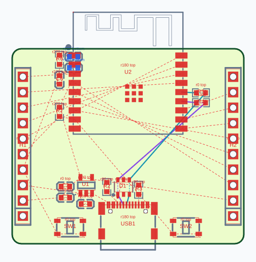
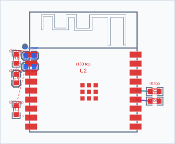
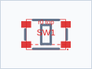
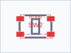
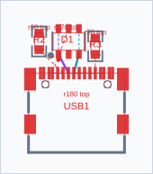
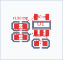
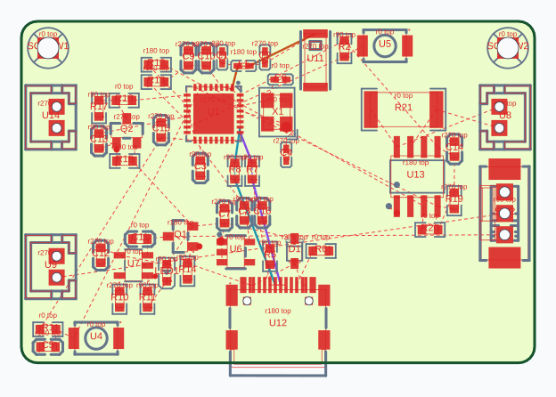

ESP32-C3: полная плата




Блок MCU


Блок Reset_Button


Блок Boot_Button


Блок USB_Port


Блок Power


ESP32-C3: независимые гипотезы одного блока теперь рассчитываются параллельно. Набор кандидатов, все промежуточные результаты и итоговые положения совпадают точно. Микророутер и оценка качества сохранены.
| Запуск | Время, с | Результат |
|---|---|---|
| before | 22.76 | Точное совпадение позиций и native checkpoints |
| serial-control | 26.11 | Точное совпадение позиций и native checkpoints |
| parallel-1 | 16.69 | Точное совпадение позиций и native checkpoints |
| parallel-2 | 18.46 | Точное совпадение позиций и native checkpoints |
before — исходный код до оптимизаций. serial-control — контроль с последовательным native API. parallel-1/2 — новый пакетный API. Запуски отдельными процессами, последовательно; сборка и тесты не выполнялись во время этих замеров. Время включает полный плейсер и диагностические захваты; SVG/HTML исключены. Фоновая нагрузка машины не контролировалась.
Две проверки: 22.76 → 16.69 с и 26.11 → 18.46 с. Это измерение ESP32-C3; такой же коэффициент для Telemetry пока не подтверждён.
Кеширование route score и переиспользование памяти поиска не показали убедительного ускорения и исключены из кода.






В предыдущем HTML пути скрывались параметром signalPaths:false. Отображение исправлено, заданные пути не потеряны. Цветные линии — пути, красный пунктир — ratsnest; это не трассировка. Constraint regions теперь также отрисовываются, когда присутствуют во входе.
Задано путей: 3; constraint regions: 0. Показан сохранённый результат предыдущего прогона, новый длительный расчёт ESPower не выполнялся.
| Путь | Ограничения | Длина / лимит, мм |
|---|---|---|
| usb_dm | Превышение мягкого ограничения | U12.A7 → R7.1: 10.26 / 7 R7.2 → U1.25: 3.08 / 8 |
| usb_dp | Превышение мягкого ограничения | U12.A6 → R8.1: 10.61 / 7 R8.2 → U1.26: 3.41 / 8 |
| rf_feed | В пределах | U1.1 → L1.1: 2.07 / 4 L1.2 → U11.1: 6.87 / 9 |

Задано путей: 2; constraint regions: 0.
| Путь | Ограничения | Длина / лимит, мм |
|---|---|---|
| USB_DM_PATH | В пределах | USB1.B7 → D1.1: 1.97 / 5 D1.6 → R4.1: 19.16 / 25 R4.2 → U2.13: 2.46 / 5 |
| USB_DP_PATH | В пределах | USB1.A6 → D1.3: 1.80 / 5 D1.4 → R5.1: 18.96 / 25 R5.2 → U2.14: 2.45 / 5 |

В сохранённом входе и текущем DSL ESPower constraint regions отсутствуют. Поэтому нарушение конкретной области пока не воспроизведено: нужен вход с этой областью. Отдельная сквозная проверка заданной запрещённой области с разрешённым блоком проходит весь плейсер.